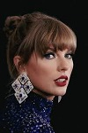

O nás
Miami je domovem mnoha úžasných festivalů, které přitahují návštěvníky z celého světa. Jedním z nejznámějších je III Points Music Festival, který se koná v říjnu ve čtvrti Wynwood. Tento festival je známý svou rozmanitou nabídkou hudebních žánrů, od elektronické hudby po živé kapely, a přitahuje jak zavedené umělce, tak nové talenty1. Dalším významným festivalem je Calle Ocho, který se koná v březnu v čtvrti Little Havana. Tento festival je součástí většího Carnaval Miami a je největší přehlídkou latinskoamerické kultury v USA. Ulice jsou plné hudebních pódií, tanečníků a stánků s jídlem, a festival přitahuje až milion návštěvníků2. Miami také hostí Ultra Music Festival, jeden z největších elektronických hudebních festivalů na světě, který se koná každoročně v březnu v Bayfront Parku. Tento festival je známý svými spektakulárními světelnými show a vystoupeními největších jmen v elektronické hudbě3. Pro milovníky jazzu je tu Miami Jazz Festival, který se koná v listopadu a přináší do města nejlepší jazzové umělce z celého světa. Festival nabízí nejen koncerty, ale i workshopy a jam sessions, kde si mohou návštěvníci vyzkoušet své hudební dovednosti3. Pokud máte rádi umění, neměli byste si nechat ujít Art Basel Miami Beach, který se koná v prosinci. Tento festival je jedním z nejprestižnějších uměleckých veletrhů na světě a přitahuje sběratele, galeristy a umělce z celého světa3. Miami je také domovem Miami Film Festival, který se koná v březnu a představuje nejlepší nezávislé filmy z celého světa. Festival nabízí projekce, diskuse s tvůrci a různé workshopy3. Pro milovníky jídla a vína je tu South Beach Wine & Food Festival, který se koná v únoru. Tento festival přináší do Miami nejlepší kuchaře a vinaře, kteří nabízejí ochutnávky a kulinářské zážitky3. A konečně, Miami Book Fair je literární festival, který se koná v listopadu a přináší do města autory, nakladatele a čtenáře z celého světa. Festival nabízí čtení, diskuse a autogramiády3
Taylor Swift
Taylor Alison Swift (* 13. prosince 1989 West Reading, Pensylvánie)[p 1] je americká zpěvačka, textařka, skladatelka, multiinstrumentalistka, režisérka a herečka. Je jednou z nejúspěšnějších zpěvaček počátku 21. století, v roce 2023 se stala autorkou s historicky nejvíce alby na prvním místě v hitparádách časopisu Billboard.[1] Její úspěch tkví dle novinářů a fanoušků v několika zásadních ohledech, a to schopnosti psát texty písní s emocionálními příběhy, se kterými se posluchači mohou identifikovat, udržováním více osobního vztahu se svými fanoušky, a také tomu, že její hudba pokrývá více žánrů od country, popu a indie, a zasahuje tak široké spektrum posluchačů.
Katy Parry
Katheryn Elizabeth Hudson (uměleckým jménem Katy Perry,[pozn. 1] * 25. října 1984 Santa Barbara, Kalifornie) je americká zpěvačka, textařka a hudebnice. Narodila se pastorskému páru, vyrůstala na gospelové hudbě a zpívala v kostele.[2] Od církve také dostala první modrou kytaru. Populární se stala díky svému prvnímu megahitu „I Kissed A Girl“. Jako jediná zpěvačka v historii popu měla pět singlů z jediného alba, Teenage Dream, na vrcholu americké singlové hitparády. Před ní se to podařilo jen Michaelu Jacksonovi. Věnuje se také nadacím, včetně spolupráce s UNICEF, a aktivismu v oblasti práv LGBT a ženské rovnoprávnosti.